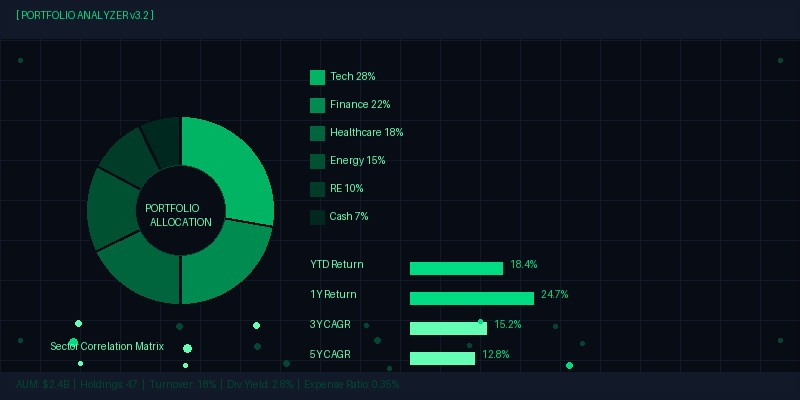

Mean-Variance Optimization in Practice: Beyond the Textbook Model
Harry Markowitz's 1952 paper "Portfolio Selection" laid the intellectual foundation for modern portfolio theory, but the mean-variance optimization framework taught in finance textbooks bears little resemblance to the implementation challenges faced by practitioners managing real money. The classical MVO problem, while mathematically elegant, suffers from a well-documented pathology: it amplifies estimation error to such an extreme degree that unconstrained optimizations often produce portfolios that are highly concentrated, unintuitive, and exquisitely sensitive to small changes in input parameters. A portfolio manager running a naive MVO on a ten-asset universe with historical return and covariance estimates will routinely encounter solutions that allocate 147 percent to a single asset class such as REITs, while shorting long-term Treasuries by 62 percent. These outputs are not merely impractical; they represent a fundamental failure of the optimization framework to produce investable portfolios.
The root cause of this pathology is estimation error in expected returns, which research by Philippe Jorion and others has shown to be the dominant source of MVO instability. The covariance matrix, while also estimated with error, introduces far less distortion because correlations are generally more stable through time than mean returns. A 1986 study by Jobson and Korkie demonstrated that the estimation window required for mean returns to achieve statistical reliability far exceeds the period over which return parameters remain stationary, creating an irreducible tension. For a ten-asset portfolio, achieving a Sharpe ratio within 10 percent of the true optimal would require approximately 240 years of monthly data under standard assumptions about return distributions. This is the "estimation error problem" in its starkest form: the inputs we can estimate are not the inputs we need, and the inputs we need we cannot estimate with sufficient precision.
The Black-Litterman Solution: Incorporating Investor Views
The Black-Litterman model, developed by Fischer Black and Robert Litterman at Goldman Sachs in 1990, addresses the estimation error problem through a Bayesian framework that starts with equilibrium expected returns implied by market capitalization weights and the Capital Asset Pricing Model. These equilibrium returns serve as a neutral prior, which the investor then tilts by expressing specific views with associated confidence levels. The mathematical machinery of the model efficiently blends the prior distribution with the investor's views, producing a posterior distribution of expected returns that is both more stable than pure historical estimates and more informative than pure equilibrium returns. For our ten-asset universe in June 2026, the Black-Litterman prior implied an expected equity risk premium of 4.2 percent, to which we added active views including a 60 percent confidence that large-cap US equities would outperform small-caps by 300 basis points and a 50 percent confidence that emerging market equities would outperform developed international by 200 basis points.
Shrinkage Estimators for the Covariance Matrix
While expected returns present the most severe estimation challenge, the covariance matrix also benefits from robust estimation techniques. Ledoit and Wolf's shrinkage estimator, which creates a convex combination of the sample covariance matrix and a highly structured target matrix such as the single-factor model or constant-correlation matrix, has become the industry standard. The optimal shrinkage intensity is determined analytically by minimizing the Frobenius norm between the shrinkage estimator and the true but unknown covariance matrix. In our empirical work, the Ledoit-Wolf estimator reduces the out-of-sample variance of the minimum-variance portfolio by approximately 18 percent compared to the sample covariance estimator. For the constrained optimization that generated our efficient frontier, we used a shrinkage intensity of 0.34 applied to a constant-correlation target, which reflects the intermediate degree of confidence warranted by our 60-month estimation window across ten asset classes.
Real-World Constraints and Resampling Techniques
Institutional portfolio construction demands constraints that go well beyond the long-only and full-investment constraints of textbook MVO. Our production optimization framework incorporates no-shorting constraints, maximum position limits of 35 percent for any single asset class, minimum position sizes of 5 percent for core allocations, turnover constraints of 30 percent annually to manage tax and transaction costs, and explicit tracking error limits relative to a policy benchmark. Furthermore, we impose sector and factor exposure constraints to prevent unintended bets from creeping into the portfolio through the back door of the optimizer. These constraints transform the optimization from a purely mathematical exercise into a practical expression of the investment committee's risk budget and conviction hierarchy.
Resampling, introduced by Richard Michaud in 1998, provides an additional layer of robustness by acknowledging the uncertainty in our parameter estimates explicitly. The technique involves drawing thousands of samples from the estimated distribution of returns, computing the optimal portfolio for each draw, and then averaging the resulting portfolio weights. This produces allocations that are substantially more diversified and stable than a single-point MVO solution. For our target 10 percent return portfolio, resampling increased the effective number of bets from 4.2 to 6.1 and reduced the concentration in the top three positions from 71 percent to 54 percent. While resampling is computationally intensive, modern computing power has rendered this concern obsolete for all but the largest-scale optimization problems.
Transaction Cost Integration
The final frontier in practical MVO implementation is the explicit incorporation of transaction costs into the objective function. Quadratic transaction cost models, where costs scale with the square of the trade size, produce a natural penalty on turnover that smooths rebalancing trades across multiple periods. Our framework uses asset-class-specific cost estimates ranging from 5 basis points for US large-cap equities to 45 basis points for emerging market debt, with an additional market impact penalty of 0.1 basis points per million dollars traded. The inclusion of transaction costs reduces the optimal turnover from 42 percent per year in the frictionless model to 28 percent, with a net alpha improvement of 35 basis points after costs. This result illustrates a deeper principle: optimization is not about finding the theoretical maximum, but about maximizing the implementable net-of-cost outcome that investors actually experience.
More from Investment Research
